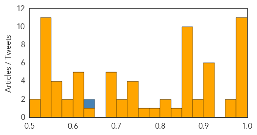

Unknown
30-Day Web Trend
2 alerts, 2 warnings

30-Day Twitter Trend
5 alerts, 0 warnings

Article Locations

Article Confidences
Top Articles:
- 1.000
- The first American with MERS is recovering; where did virus come from?
- 0.999
- First MERS Case Reported in the United States
- 0.998
- More MERS Virus Cases Documented in Saudi Arabia
- 0.995
- First American MERS patient might leave hospital soon, improving daily
- 0.992
- First U.S. Patient Recovering
- 0.991
- MERS virus patient improving, still isolated at Community Hospital in Munster
- 0.989
- American MERS patient doing well
- 0.988
- Uganda: Moyo strange illness cases rise to 88
- 0.985
- First U.S. MERS patient to be isolated at home after discharge
- 0.982
- PA Issues Haj Warning as Saudi MERS Virus Reaches U.S., UK
- 0.981
- Saudi Arabia Reports More Deaths From MERS
- 0.973
- At-Risk Pilgrims Asked To Delay Saudi Visits
- 0.966
- Health ministry denies any MERS fatalities in Egypt
- 0.925
- Taiwan issues H5N6 flu alert for Sichuan province
- 0.920
- Australia: Bandicoot droppings linked to Salmonella Java in Northern Beaches
- 0.917
- Chicago Tribune
- 0.917
- Chicago Tribune
- 0.917
- Chicago Tribune
- 0.909
- WHO Declares Global Health Emergency To Stem Potential Resurgence Of Polio
- 0.892
- Pakistan To Set Up Mandatory Vaccination Points For Travelers
- 0.879
- Pakistan to set up polio vaccination points at airports
- 0.873
- WHO declares polio emergency
- 0.867
- Haradh given widespread support by WHO - Yemen
- 0.866
- U.S. condemns Ukraine referendum as 'contrived and bogus'
- 0.866
- Russia says Lavrov, German FM stress need for dialogue in Ukraine
- 0.866
- German Foreign Minister to meet Russia's Lavrov in Vienna
- 0.866
- China police say only one person responsible for station attack
- 0.866
- Russia to deploy new submarines, ships in Black Sea fleet
- 0.866
- Four injured in knife attack at China railway station -media
- 0.864
- No cases of MERS in LebanonHealthcare
- 0.855
- Oakland Tribune editorial: Polio warning by WHO should put every nation on guard
- 0.844
- WHO statement on the meeting of the International Health Regulations Emergency Committee concerning the international spread of wild poliovirus
- 0.817
- WHO slaps travel curbs on Pak over polio fears
- 0.811
- Pakistan to immunise people going abroad against polio
- 0.795
- Pakistan to set up polio vaccination points at airports
- 0.770
- Polio Resurgence Has Health Officials Worried
- 0.748
- Comment: Food poisoning outbreaks of 50 years ago could be repeated
- 0.748
- Our ability to cope with food poisoning outbreaks has not improved much in 50 years
- 0.738
- Take Steps to Keep Horses Healthy
- 0.726
- Warning over EHV-1 cases in Kansas and Wisconsin
- 0.705
- Investigation into series of botched surgeries at Rockhampton Hospital
- 0.705
- Lyme disease hotspot forming South East NSW
- 0.696
- Pakistan to ramp up Polio measures after WHO warns virus is re-emerging
- 0.696
- Polio-related travel ban
- 0.688
- Pakistans polio outbreak threatens neighbors
- 0.688
- Gardasil Scandal Brewing in Colombia?
- 0.675
- Pakistan to challenge WHO's 'polio' travel ban
- 0.646
- Breath test for tuberculosis under development at CSU with Gates Foundation funding
- 0.624
- Incomplete information may render vaccination certificate invalid
- 0.607
- Thai PM denies legal charges that may topple government
Showing top 50 articles...
Top Tweets:
- 0.645
- Trivia Tuesday: Australian health officials have banned blowing out birthday candles in schools in a bid to reduce the spread of the flu.
Ebola
30-Day Web Trend
0 alerts, 0 warnings

30-Day Twitter Trend
0 alerts, 0 warnings

Article Locations

Article Confidences

Top Articles:
- 1.000
- Ebola Virus Disease in West Africa 231 Cases, 155 Deaths
- 1.000
- Senegal re-opens border with Guinea as Ebola threat eases
- 0.999
- Senegal re-opens border with Guinea as Ebola threat eases
- 0.999
- As Ebola Virus Slows in West Africa, Senegal Reopens Border to Guinea
- 0.999
- Ebola Outbreak Is Now 'Under Control'; Senegal Re-Opens Border With Guinea
- 0.997
- Senegal re-opens border with Guinea as Ebola threat eases
- 0.994
- MSF says Ebola fever not eradicated in Guinea
- 0.936
- Senegal reopens border with Guinea - Africa
Top Tweets:
-
No tweets found for May 06, 2014